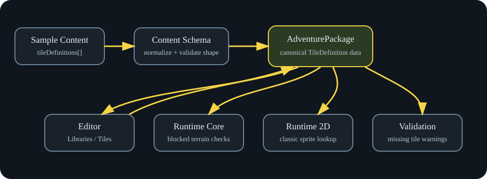

This document provides comprehensive technical documentation for the
ACS adventure construction system. It explains the architecture, data
models, and implementation details for developers, maintainers, and
advanced users.
ACS (Adventure Construction Set) is a browser-based environment for
creating and playing text-based adventure games with retro-styled
graphics. The system consists of three main components: a web-based
editor, a runtime player, and a backend API for persistence and
validation.
Core Principles
Browser-native: Runs entirely in web browsers using
modern JavaScript
Offline-capable: Works without internet
connectivity for local development
Modular architecture: Clean separation between
editing, playing, and persistence
Extensible: Plugin architecture for AI providers,
renderers, and export formats
Target Users
Content creators: Authors who build adventures
using the visual editor
Players: End users who experience published
adventures
Developers: Contributors who extend or maintain the
system
Integrators: Third parties who connect external
services
2. Architecture Principles
Separation of Concerns
The system is built around clear boundaries between different
functional areas:
Authoring: Content creation and editing
Execution: Runtime gameplay and state
management
Persistence: Data storage and retrieval
Presentation: Visual and audio rendering
Integration: External service connections
Data Flow Architecture
Content flows through the system in a structured pipeline:
Each stage has well-defined interfaces and data contracts.
System Diagrams
The ACS architecture is best understood with visual diagrams. The
current system reference includes several key diagrams that describe the
authoring and runtime flow.
Workflow Overview:
docs/assets/workflow-vertical.svg shows the end-to-end
authoring pipeline from editor actions through validation and runtime
playback.
Editor Feature Flow:
docs/assets/editor-guide.svg shows the main editor
sections, the user journey through World Atlas, Map Workspace,
Libraries, and Logic & Quests.
Runtime Lifecycle:
docs/assets/runtime-guide.svg illustrates the runtime
player state transitions, save/load flows, and player interaction
loop.
Tile Definition Flow:
docs/assets/tile-definition-flow.svg shows how tile
metadata is authored, validated, and consumed by the renderer and
runtime.
Map Graph and Trigger Chains:
docs/assets/tutorial-relay-detail-03-map-links.svg and
docs/assets/tutorial-relay-detail-04-trigger-cells.svg show
map linkage and trigger cell behavior.
Authoring Workflow

Tile Definition Flow
Extensibility Points
The system provides multiple extension mechanisms:
AI Providers: Pluggable content generation
services
The AI integration uses a provider-agnostic architecture that allows
multiple AI services to be used interchangeably. This design enables
flexibility in choosing AI providers based on cost, quality, or
availability requirements.
Key Components
Provider Manager: Orchestrates AI service
interactions
Content Generators: Specialized modules for
different content types
Caching Layer: Optimizes API usage and response
times
Fallback System: Ensures reliability when primary
providers fail
Response Caching: Reduces API calls for similar
requests
Batch Processing: Efficient handling of multiple
generation tasks
Rate Limiting: Manages API usage to stay within
limits
AI Integration Architecture
Diagram
graph TD
A[ACS Editor] --> B[AI Service Layer]
B --> C[Provider Manager]
C --> D[OpenAI Provider]
C --> E[Anthropic Provider]
C --> F[Local AI Provider]
C --> G[Custom Provider]
D --> H[API Calls]
E --> H
F --> I[Local Models]
G --> J[External Services]
B --> K[Content Generation]
K --> L[Dialogue Trees]
K --> M[World Descriptions]
K --> N[Quest Ideas]
Load Balancing: Distribute requests across multiple
providers
Cost Optimization: Choose providers based on
pricing
Quality Preferences: Select providers for specific
content types
6. Editor Architecture
Component Structure
The editor is built as a single-page application with modular
components:
Canvas View: Main editing area with map
display
Tool Palette: Available editing tools and
brushes
Property Panel: Configuration for selected
elements
Library Browser: Asset and template management
Validation Panel: Error checking and warnings
Editing Modes
Map Editing
Primary content creation mode:
Tile Painting: Brush-based terrain editing
Entity Placement: Drag-and-drop character
positioning
Trigger Creation: Visual logic builder
Property Editing: In-place configuration
Dialogue Editing
Conversation tree construction:
Node-Based Editor: Visual dialogue flow
Branching Logic: Conditional conversation
paths
Variable Integration: Dynamic text based on game
state
Preview System: Test conversations in context
Quest Design
Objective and narrative creation:
Stage Builder: Step-by-step quest progression
Dependency Management: Prerequisite and unlock
systems
Reward Configuration: Item and experience
rewards
Tracking Integration: Journal and UI updates
State Management
Undo/Redo System
Comprehensive change tracking:
Operation Batching: Groups related changes
Memory Management: Efficient storage of edit
history
Selective Undo: Target specific operations
State Persistence: Survives editor sessions
Auto-Save Functionality
Editor Architecture Diagram
docs/assets/editor-guide.svg shows the current editor
component layout and the interaction flow between map editing, library
browsing, quests, and validation.
Editor Architecture
graph TD
A[Web Editor] --> B[UI Components]
B --> C[Map Editor]
B --> D[Entity Panel]
B --> E[Quest Builder]
B --> F[Asset Manager]
A --> G[State Management]
G --> H[Project State]
G --> I[Undo/Redo]
G --> J[Validation State]
A --> K[API Integration]
K --> L[Project API]
K --> M[Validation API]
K --> N[Publishing API]
A --> O[AI Services]
O --> P[Content Generation]
O --> Q[Assistance Tools]
Prevents data loss:
Draft Saving: Automatic local storage
Version Control: Timestamped snapshots
Conflict Resolution: Merge concurrent changes
Recovery Options: Restore from backups
Validation Integration
Real-time quality checking:
Syntax Validation: Structural correctness
Logic Verification: Trigger and quest
consistency
Performance Checks: Optimization warnings
Completeness Testing: Missing content
detection
7. Runtime Engine
Execution Model
The runtime uses a turn-based execution model:
Input Processing: Handle player actions
State Update: Modify game world state
Trigger Evaluation: Check and execute conditional
logic
The runtime engine is visualized in
docs/assets/runtime-guide.svg, showing the execution loop,
trigger evaluation, and presentation update phases.
Runtime Engine
graph TD
A[Player Input] --> B[Runtime Engine]
B --> C[State Update]
B --> D[Trigger Evaluation]
B --> E[Presentation Update]
C --> F[Save/Load]
D --> G[Quest State]
E --> H[Renderer]
H --> I[Classic ACS]
H --> J[Debug Grid]
GET /api/projects # List projects
POST /api/projects # Create project
GET /api/projects/:id # Get project
PUT /api/projects/:id # Update project
DELETE /api/projects/:id # Delete project
Content Management
GET /api/projects/:id/drafts # List drafts
POST /api/projects/:id/drafts # Save draft
GET /api/projects/:id/releases # List releases
POST /api/projects/:id/releases # Create release
Validation Service
POST /api/validate # Validate content
GET /api/validation/rules # Get validation rules
POST /api/validation/rules # Update rules
# Run all testsnpm test# Run specific test suitenpm run test:unitnpm run test:integrationnpm run test:e2e
Deployment
Environment Configuration
Development: Local development setup
Staging: Pre-production testing
Production: Live user environment
CI/CD Pipeline
Automated deployment process:
Code Quality: Linting and testing
Build: Compile and bundle
Test: Automated testing
Deploy: Environment-specific deployment
Monitor: Health checking and alerting
where responsibilities live
how the important workflows behave
what future work is expected to build on top of
The intended reading order is top-down. Early sections give the
mental model. Later sections give the implementation map.
Executive Summary
ACS is a browser-based adventure construction environment inspired by
classic 1980s construction-set software, but designed with modern
package boundaries and future extensibility in mind.
At a high level, the application has five major parts:
A shared authored-content model centered on
AdventurePackage
A runtime engine that plays that content
A browser editor that creates and changes that content
A publishing layer that creates release-backed handoff
artifacts
A future AI integration layer that is intentionally
provider-agnostic and review-first
The most important architectural principle is separation:
gameplay rules are separate from gameplay presentation
editor behavior is separate from editor presentation
authored content is separate from runtime state
mutable draft state is separate from immutable release state
AI provider details are separate from AI review and apply logic
That separation is what makes the longer roadmap possible without
rewriting the core system every time a new feature arrives. It is what
allows:
multiple renderer families such as classic 8-bit, richer 2D, and
later 3D
editor skins such as WorldTree or other branded shells
richer publishing modes and delivery paths
AI-assisted authoring without locking the app to one model
vendor
future multiplayer and mobile shells
Current project position:
Milestones 0 through 30 are complete
Milestone 31 is complete through 31O
Milestone 32 is active and complete through
32A
Milestones 33 through 40 are planned in
the roadmap
Product Model
What The Application Is
The simplest way to understand ACS is this:
it is a playable adventure runtime
it is also a game-construction environment
it is also a release and export system
Those three things share one content model instead of each inventing
their own private data shape.
Who The Application Is For
There are four main reader or user roles:
1. Player
A player opens Play Mode and:
moves through maps
interacts with entities
reads dialogue
triggers quest progression
saves and loads session state
2. Designer
A designer opens Edit Mode and:
creates or changes authored content
paints maps
places entities
edits libraries and logic
validates the adventure
playtests the draft
publishes releases
exports handoff packages
3. Reviewer
A reviewer may not want to edit or play deeply. They may instead want
to:
inspect release metadata
compare export modes
review artifact integrity
understand what a release contains
4. Future Integrator
A future integrator may want to:
connect an AI provider
add a renderer family
add a distribution shell
build tooling around projects or releases
This reference is especially important for that role because they
need to know what must remain stable and what is intentionally
replaceable.
Main User-Visible Modes
The application currently presents three important visible modes:
Play Mode
The runtime page. It loads a playable session and renders it.
Edit Mode
The browser editor. It changes authored content and draft state.
Test & Publish
This is inside the editor, but it is important enough to call out
separately. It is where validation, release creation, export preview,
and artifact handoff happen.
Main Artifacts
The application uses a set of related artifacts that are easy to
confuse at first, so it is worth being explicit:
Draft
Mutable adventure state being edited right now.
Project
A mutable backend-backed draft record. This is still editable.
Release
An immutable published snapshot of a project. This is the stable
source for shareable outputs.
Forkable Package
An editable handoff built from a release. This is for another
designer.
Standalone Package
A play-only handoff built from a release. This is for a player or
distributor.
Review Package
A reviewer-facing release summary bundle.
AI Review Artifacts
Portable reviewed AI handoff records used in the future AI flow
before anything is imported or applied.
Core Domains
The system becomes much easier to understand once its major domains
are separated mentally.
Adventure Domain
The adventure domain is the authored content of the game world. This
is what designers create.
It includes:
adventure metadata
world structure and map organization
maps
regions or zones
tiles and tile definitions
entity definitions
entity instances placed on maps
items
skills, traits, spells, and flags
dialogue
quests and objectives
media and sound cues
visual and presentation records
starter-library and custom-library content
This domain answers the question:
What exists in the authored world?
Runtime Domain
The runtime domain is the active playable state and the rules that
operate on it.
It includes:
session state
player position
inventory state
flags and quest state
active dialogue state
command handling
trigger execution
enemy cadence and behavior
runtime events
This domain answers the question:
What is happening right now while the game is being played?
Editor Domain
The editor domain is the authoring workflow layer.
It includes:
draft mutation helpers
workspace behavior
focused editing flows
diagnostics
validation presentation
project and release orchestration
This domain answers the question:
How does the designer safely change the authored world?
Publishing Domain
The publishing domain turns immutable releases into handoff
artifacts.
It includes:
forkable exports
standalone exports
handoff summaries
artifact integrity reports
reviewer packages
This domain answers the question:
How do we turn a release into something that another person can edit,
play, or review?
AI Domain
The AI domain is the future model-integration boundary.
It includes:
provider manifests
request envelopes
structured proposals
review reports
change summaries
application plans
session records
review/export/import handoff layers
This domain answers the question:
How can AI assist the product without being allowed to bypass
structure, validation, or human review?
Domain Boundaries
The repo is already split into packages so responsibilities can stay
separate as the product grows.
Package / App
Responsibility
packages/domain
Shared TypeScript model for authored content objects and related
records
packages/content-schema
Package reading, defaults, normalization, and compatibility
cleanup
packages/runtime-core
Renderer-agnostic gameplay rules, state, commands, triggers, and
events
packages/runtime-2d
Canvas-based gameplay presentation over runtime snapshots
packages/editor-core
Pure authoring mutations and editor-side report builders
packages/validation
Shared structural and reference validation
packages/persistence
Runtime snapshot persistence wrappers
packages/project-api
Shared browser-facing project/release DTOs and client contracts
packages/publishing
Release-backed export and handoff artifact generation
packages/default-content
Built-in starter-library source metadata and helpers
packages/ai-core
AI provider-agnostic request/review/apply/import/export
contracts
apps/web
Browser runtime UI and browser editor UI
apps/api
Local project/release API and standalone bundle assembly
Boundary Rules
These are the rules that keep the system maintainable:
runtime-core must not depend on DOM or browser
presentation
editor-core must not depend on browser layout
publishing must not depend on browser-only editor
state
ai-core must not contain vendor-specific SDK logic
apps/web may orchestrate behavior, but should not
become the source of truth for game rules or structured handoff
logic
System Architecture
At a high level, the system works like this:
flowchart LR
A[Authored content: AdventurePackage] --> B[content-schema]
B --> C[runtime-core]
B --> D[editor-core]
B --> E[validation]
B --> F[publishing]
B --> G[ai-core]
C --> H[runtime-2d]
C --> I[apps/web runtime]
D --> J[apps/web editor]
J --> K[project-api]
K --> L[apps/api]
F --> L
What This Means In Practice
Authored content is read and normalized through
content-schema
The runtime engine consumes normalized content and produces runtime
state and events
The renderer and browser runtime UI present that state
The editor changes authored content through browser orchestration
plus editor-core
Validation is shared rather than duplicated per UI
Publishing starts from releases, not from arbitrary browser draft
state
Future AI work should hand structured proposals into review/apply
flows instead of calling editor internals directly
Data Model Hierarchy
There are three distinctions that matter most when reading the code
or the docs.
1. Authored Data Vs Runtime
State
These are not the same thing.
Authored Data
This is long-lived content the designer creates:
maps
definitions
dialogue
quests
assets
triggers
This lives primarily inside AdventurePackage.
Runtime State
This is live state created when the game is being played:
current map
player position
inventory quantities
active flags
quest progress
active dialogue node
event history
This lives in runtime session state and snapshots.
The same authored adventure can produce many different runtime
sessions.
2. Definitions Vs Instances
A second critical distinction is reusable definitions versus placed
or live instances.
Example:
an entity definition describes the reusable idea of a thing
an entity instance is the copy placed on a specific map
coordinate
That split is important because it allows:
one definition to be reused multiple times
instance-specific placement data
optional instance display names
future instance-local behavior overrides
3. Mutable Vs Immutable
Artifacts
This distinction matters most in publishing.
Mutable
local drafts
backend projects
Immutable
releases
release-backed export artifacts
This is what keeps release handoffs reproducible and reviewable.
Application Modes
Play Mode
Play Mode loads:
the built-in sample adventure
a local draft playtest
or a published release
Then it:
creates a runtime session
accepts player commands
advances runtime state
renders the result
allows save/load/reset
Edit Mode
Edit Mode loads a draft and lets the designer:
edit adventure metadata
manage world structure and maps
paint tiles
place entities
edit library objects
edit logic and quests
validate the draft
playtest the draft
manage projects and releases
Test & Publish
This is the release-preparation area within the editor. It is where
the designer:
runs validation
reads diagnostics
previews release handoffs
creates projects
saves projects
publishes releases
exports reviewable packages
End-To-End Workflows
Runtime Command Flow
Player input
-> apps/web runtime handler
-> runtime-core command dispatch
-> runtime state mutation and engine events
-> browser UI updates and event log
-> runtime-2d render from the latest snapshot
Editor Mutation Flow
Designer action in editor
-> apps/web editor handler
-> editor-core pure mutation helper
-> updated AdventurePackage draft
-> shared validation and diagnostics
-> rerender current editor workspace
Publishing is an architecture boundary: it turns immutable release
snapshots into shareable artifacts without letting unstable draft state
leak into distribution.
Publishing deserves its own section because it is one of the most
important product workflows and one of the easiest to misunderstand.
Why Publishing Starts From
Releases
The publishing system is intentionally release-backed.
That means:
the designer edits a draft
the draft can be saved into a mutable project
an immutable release is published from that project
all shareable exports are derived from that immutable release
This matters because it prevents confusion between:
unstable authoring state
stable release state
editable handoff artifacts
play-only handoff artifacts
Draft Vs Project Vs Release
Draft
The current working copy. It may live only in browser storage.
Project
A backend-backed mutable editable record. This is still under active
development.
Release
A frozen published snapshot. This is the stable source for exports,
previews, and external review.
Export Types
Forkable Package
The editable handoff.
Use it when the recipient should:
import the work into the editor
continue building it
remix it
It preserves authored content and handoff metadata.
Standalone Package
The play-only handoff.
Use it when the recipient should:
play the game
host the game
review the runtime package as a player-facing build
It is intentionally a static web bundle instead of a second runtime
model.
Review Package
The reviewer-facing handoff.
Use it when someone needs to:
inspect release metadata
compare package integrity
review the release structure without importing or playing
deeply
Delivery Model For
Standalone Packages
The current and planned delivery modes are:
manual static hosting
bundled local launcher
hosted web delivery
future desktop wrappers
The important architecture decision is that these are delivery shells
over the same exported static runtime bundle.
AI-Agnostic Integration In
Detail
This section is intentionally much more detailed than the rest of the
document because the AI foundation is one of the least obvious parts of
the system.
The Problem The AI Layer Is
Solving
If AI support is added carelessly, the application gets locked
to:
one vendor
one SDK
one response format
one UI flow
Worse, AI code can end up bypassing:
structured content rules
human review
release discipline
editor mutation boundaries
The AI-agnostic layer exists to prevent that.
The Core Principle
AI should be allowed to propose structured changes.
AI should not be allowed to directly mutate the authored world.
That means the stable system should not be:
“call provider SDK and write directly into editor state”
Instead, it should be:
build a normalized request
receive a structured proposal
validate the proposal
review the proposal
summarize its impact
decide whether it is acceptable
only then apply it through controlled authoring flows
What @acs/ai-core
Actually Is
packages/ai-core is not a live model client.
It is also not an agent loop.
It is a stable contract and review package that defines:
what an AI provider looks like to the app
what a generation request looks like
what a proposal looks like
what a review report looks like
what an apply plan looks like
what portable handoff artifacts look like
Think of it as the application’s AI language and review protocol.
What @acs/ai-core Is
Not
It is not:
OpenAI-specific
Anthropic-specific
local-model-specific
UI-specific
browser-specific
backend-route-specific
That is deliberate. The point is that the same review lifecycle
should survive a provider change.
How the AI-Agnostic
Connecting Model Works
The AI-agnostic model is a connector pattern that keeps the app
stable while vendors change.
ai-core defines the stable internal request and
proposal language.
provider adapters translate to vendor-specific API calls.
shared review flows validate, summarize, and humanize
proposals.
the editor can now record explicit accept/reject review decisions
and preview apply-plan readiness.
only reviewed apply plans are allowed to mutate authored content,
and the current editor still stops before draft mutation.
That means AI integration should look like:
Generate an AdventureGenerationRequest in app
terms.
Hand it to a provider adapter outside ai-core.
Translate the vendor response into an
AiAdventureProposal.
Validate and review the proposal using shared contracts.
If accepted, build an apply plan.
Apply changes through controlled editor mutation.
This is the core of the AI-agnostic connecting model: stable app
contracts on one side, vendor-specific translation on the other.
The AI Lifecycle
The intended future lifecycle is:
Choose a provider
Build a normalized request
Send that request through a provider-specific adapter
Receive a provider response
Convert that response into a stable proposal envelope
Validate the request and the proposal
Build review artifacts
Have a human accept or reject the proposal
If accepted, build an apply plan
Only then pass the reviewed result into controlled editor-side
mutation flow
This lifecycle applies specifically to content AI -
AI-assisted authoring and content generation workflows that produce new
adventure content. It is designed to be review-first, ensuring human
oversight before any AI-generated content is applied to authored
adventures.
Content AI vs Runtime AI
The AI integration architecture distinguishes between two
fundamentally different AI use cases:
Content AI (Authoring-Time
AI)
This is the AI lifecycle described above, focused on assisting human
designers during content creation. Key characteristics:
Scope: Generates new adventure content (maps,
entities, dialogue, quests, etc.)
Timing: Occurs during editing/authoring
sessions
Review: Requires explicit human
acceptance/rejection before application
Purpose: Augments the designer’s creativity and
productivity
Integration: Feeds into the editor’s mutation flow
after review
Runtime AI (Gameplay-Time AI)
This is a separate concern for AI-driven NPC behavior during actual
gameplay. Key characteristics:
Scope: Controls NPC actions, responses, and
decision-making in real-time
Timing: Occurs during play sessions, responding to
player actions
Review: No human intervention - AI operates
autonomously like another player in multiplayer
Purpose: Creates dynamic, responsive NPC behavior
without pre-authored scripts
Integration: Interfaces directly with the runtime
engine, not the editor
Runtime AI is intentionally separate from content AI to allow NPCs to
behave naturally and unpredictably, responding to player actions in
real-time without requiring human authorization for each decision. This
enables more immersive and dynamic gameplay experiences.
Main AI-Core Types And
What They Mean
AiProviderManifest
This is the stable identity card for a provider.
It should answer questions like:
what is this provider called?
what capabilities does it offer?
what kind of output does it claim it can produce?
what constraints or warnings does the app need to know?
This lets the rest of the app refer to a provider generically.
AdventureGenerationRequest
This is the normalized request envelope the application wants to
send.
It is not a raw vendor prompt blob.
It should carry things like:
provider identity
the authoring goal
the requested task
any limits
any context the provider needs
Its job is to express the app’s intent in application terms before
any vendor-specific translation happens.
AiAdventureProposal
This is the structured proposal envelope returned for review.
It is not supposed to be “whatever the provider happened to
return.”
Instead, it is the provider response translated back into a stable
application-level proposal shape. That means the rest of the app can
review proposals consistently without caring which vendor produced
them.
AdventureGenerationPlan
This is the normalized step plan for the future UI or API flow.
Its purpose is to make the review-first lifecycle explicit. Instead
of the browser inventing its own step logic, the application can point
at one shared plan shape that says:
gather context
build request
obtain proposal
validate
review
accept/reject
prepare apply
AiProposalReviewReport
This is the shared readiness report for a proposal.
It combines:
request validation
proposal validation
provider warnings
readiness status
next-step guidance
Its job is to answer:
is this proposal structurally okay?
is it blocked?
is it reviewable?
what should the human do next?
AiGenerationSessionRecord
This bundles the request, plan, proposal, and review state into one
portable session record.
Its job is to prevent later UI or persistence layers from keeping
those pieces in unrelated browser-only state.
AiProposalChangeSummary
This explains what the proposal would change.
Its purpose is practical: before a human accepts a proposal, they
should be able to see the impact without diffing a whole adventure
package manually.
AiProposalApplicationPlan
This answers a different question:
If the proposal is accepted, can it be applied yet, and what would
that affect?
This is the bridge between review and controlled mutation.
Review
Packages, Bundles, Archives, And Import Dossiers
Later Milestone 31 slices add portable handoff layers on top of the
core review objects.
The point of these is simple:
the app should be able to store, export, review, re-import, or audit
reviewed AI work without reconstructing everything from ephemeral UI
state
That is why there are now typed layers for:
review packages
file bundles
archives
handoff integrity reports
import plans
import reports
import dossiers
import dossier integrity reports
These are not just extra wrappers for fun. They are the transport and
audit layers that keep reviewed AI work portable and inspectable.
How A Provider Adapter
Should Work
This is the part a future implementer needs most clearly.
A provider adapter should live outside ai-core.
Its job should be:
Accept a stable AdventureGenerationRequest
Translate that request into the vendor’s API shape
Call the vendor SDK or HTTP API
Receive the vendor response
Translate that response into a stable
AiAdventureProposal
Hand that proposal back to the shared review flow
In other words:
ai-core defines the language the app speaks
internally
the provider adapter is a translator between the app’s language and
the vendor’s language
What A Provider Adapter
Must Not Do
A provider adapter should not:
mutate editor state directly
bypass validation
bypass review reports
decide by itself that a proposal is acceptable
call low-level authoring mutations without going through the
reviewed apply path
How To Implement A New
Provider Later
If someone wanted to wire in a new provider, the expected steps would
be:
Define a new AiProviderManifest
Add that provider to the provider registry
Write an adapter that converts:
AdventureGenerationRequest -> vendor request
vendor response -> AiAdventureProposal
Pass the proposal through:
request validation
proposal validation
review report creation
change summary creation
application planning
Expose that reviewed lifecycle in UI or API
The key point is that the provider-specific code is mostly just
translation and transport. The review semantics stay shared.
The first live-provider rollout should do this with one complete
adapter end to end rather than several partial adapters at once. The
goal is to prove that a real model can be configured, called, reviewed,
and applied through the same lifecycle the package-level contracts
already define.
How To
Switch From One AI Model Or Vendor To Another
This is one of the main reasons the architecture exists.
Switching providers should not require rewriting:
the editor
the runtime
the content model
the review lifecycle
What should change:
provider manifest choice
provider adapter implementation
model-specific limits and warnings
What should stay stable:
generation request shape
proposal shape
review report shape
session record shape
change summary shape
application plan shape
review/export/import handoff layers
human review requirement
That is what it means for the AI layer to be provider-agnostic.
What Is Still Missing Today
Right now the AI layer is foundational, not end-user complete.
What exists:
the shared contracts and portable review layers
Milestone 32A product-level request planning for
creating a new game, finishing an existing game, or expanding an
existing game from an AI prompt
OpenAI Responses request planning and the local API bridge for
server-side provider submission
Test & Publish AI Game Creation controls for prompt submission,
proposal preview, explicit accept/reject review state, and apply-plan
preview
What does not exist yet:
draft mutation from accepted AI proposals
persistent AI review session storage in the local project API
import UI for archived AI review handoffs
actual reviewed-apply mutation UI
So the right way to read the current AI system is:
the provider call and review UI exist; controlled draft application
comes later
Runtime Behavior Model
The runtime is responsible for gameplay meaning, not presentation
chrome.
Core responsibilities include:
movement
interaction
inspection
dialogue state
quest progression
trigger execution
enemy cadence
runtime event emission
Current behavior is still mostly player-centered. Future
actor-capable action work is planned so NPCs, AI-driven actors, and
multiplayer participants can use the same validated action pathways
instead of bypassing runtime rules.
Large-map presentation is also still simpler than the final target.
Oversized maps are allowed in authored content, but true player-facing
map-window scrolling is future presentation work. World coordinates
should remain in shared runtime state while viewport behavior remains a
presentation concern.
Editor Behavior Model
The editor is responsible for authoring workflows and workspace
orchestration, not gameplay rules.
Important editor rules:
editor-core provides pure mutation helpers that are
independent of browser UI
apps/web editor UI orchestrates workspace state,
controls, and editor-core calls
validation should use shared package rules rather than duplicated
logic
diagnostics should summarize authoring quality without replacing
validation
the same draft model should survive future editor skins
This keeps the authoring layer stable even if the visual editor shell
changes.
The long-term goal is an editor that can be reskinned or reorganized
visually without forking authoring behavior.
Presentation And Skinning
Skinning is a future architectural feature, not just a styling
exercise.
Gameplay Presentation
runtime-core owns gameplay meaning
runtime-2d and later renderer families own visual
presentation
This is what makes classic, richer 2D, and later 3D presentations
possible over the same rules.
The same separation should be used for large-map scrolling:
the engine should continue to think in map coordinates
renderers should decide how to frame large maps
That means classic mode, HD 2D, and later 3D should be free to choose
different viewport behavior without changing movement or traversal
rules.
Editor Presentation
shared draft state should remain stable
validation and mutation helpers should remain stable
future WorldTree or branded shells should sit over those same
contracts
The live UI surface registry is tracked in:
docs/ux-skinning-inventory.md
docs/ux-skinning-inventory.json
Persistence And Storage
The application currently uses three important storage layers.
Browser Storage
Used for:
runtime saves
local drafts
remembered active project id
Local API Storage
Used for:
mutable projects
immutable releases
The current local backing store lives in
apps/api/data/store.json.
Export Artifacts
Used for:
forkable designer handoffs
standalone player handoffs
reviewer handoffs
future AI review/import handoffs
Validation And Quality Gates
Quality is treated as a layered gate, not one simple command.
Important commands:
npm run quality
npm test
npm run docs:validate
Together these cover:
complexity
docs validation
typecheck
unit tests
editor UI smoke
runtime UI E2E
playtest smoke
Documentation quality is also part of milestone quality:
PDFs must be regenerated when guide/reference sources change
tables of contents must be visible in source guide/reference
pages
screenshots must be current and task-specific
tutorial screenshots must be step-accurate
Current Limitations
Important current gaps include:
full CRUD coverage is still incomplete across all object
classes
editor information architecture cleanup is still future work
richer player profile and front-end state presentation are still
future work
no true runtime map-window scrolling yet for oversized maps
starter-library and graphics completion is still future work
no cloud or account system yet
no multiplayer yet
no user-facing AI authoring workflow yet
Future Roadmap Alignment
The roadmap currently places major future work like this:
32: AI game creation from prompt. 32A now
maps create, finish, and expand game prompts onto the shared AI
generation/review contract; 32B adds OpenAI Responses
request planning; 32C adds the local API bridge;
32D adds editor prompt submission and proposal preview;
32E adds explicit accept/reject review state and apply-plan
preview before any draft mutation
33: optional AI-driven NPC behavior and shared
actor-capable runtime growth
34: multiplayer
35: mobile play-only shell
36: editor completion and editor-skinning
separation
37: player front end and runtime-skinning separation,
including runtime map-window scrolling
38: renderer family choice, including renderer-family
viewport rules for large maps
39: starter libraries and graphics completion
40: WorldTree naming and compatibility migration
Subject Glossary
Product Terms
Play Mode: the playable runtime
Edit Mode: the authoring environment
Test & Publish: the release and export area inside
the editor
Authoring Terms
AdventurePackage: the top-level authored content
object